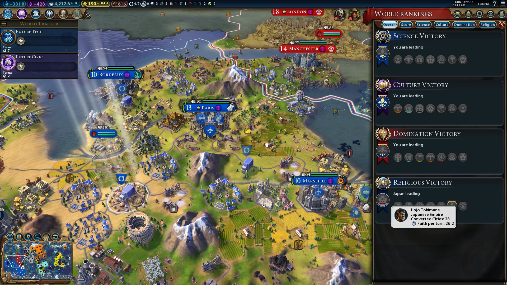

Civilization VI
Civilization VI to turowa strategia w której gracz przyjmuje rolę przywódcy państwa rywalizującego z innymi państwami na dużej mapie. Gra zależnie od ustawień może trwać 250, 500, 750, albo 1000 tur. Gra ma wiele skomplikowanych mechanik, takich jak drzewko technologi, rozciągające się od prehistorii do epoki współczesnej, system doktryn politycznych, mechaniki produkcji i walki jednostek, mechaniki religii. Grę wygrywa się na kilka sposobów:
Sposoby na zwycięstwo
- Zwycięstwo religijnie: wiekszość miast w wszystkich państwach musi wyznawać religię danego państwa.
- Zwycięstwo przez podbój: dane państwo musi kontrolować pierwotne stolice wszystkich pozostałych państw.
- Zwycięstwo kulturowe: Dane państwo musi być odwiedzane przez więcej turystów niż wszystkie inne państwa razem wzięte.
- Zwycięstwo naukowe: Dane państwo musi założyć kolonię na Marsie.
- Zwycięstwo dyplomatyczne: Dany lider państwa musi zdobyć najwyższą pozycję w Kongresie Światowym.
- Zwycięstwo na punkty: Po określonej liczbie tur automatycznie wygra gracz z najwiekszą ilością punktów.